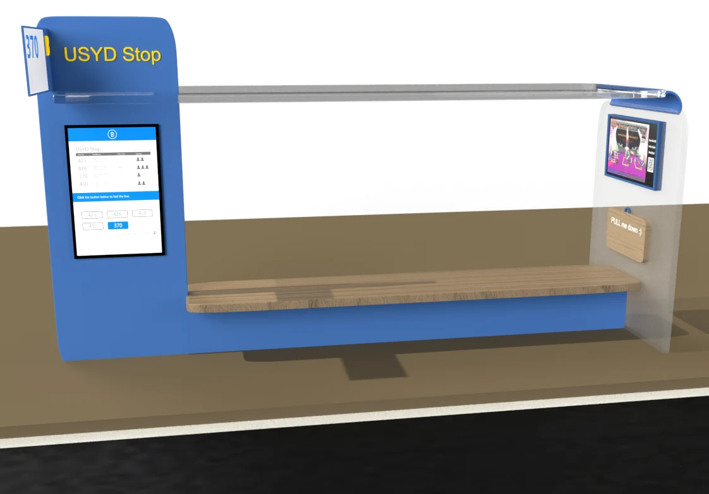
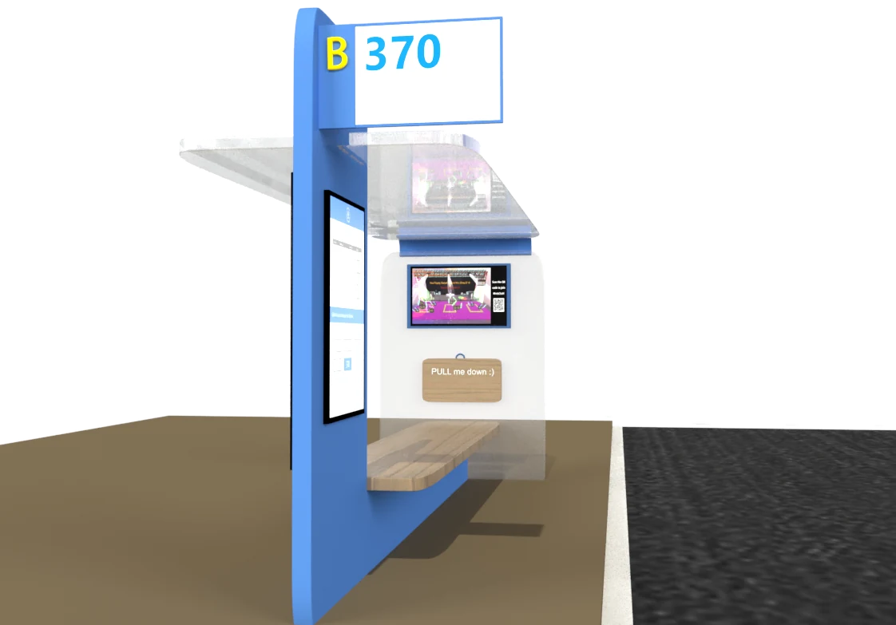
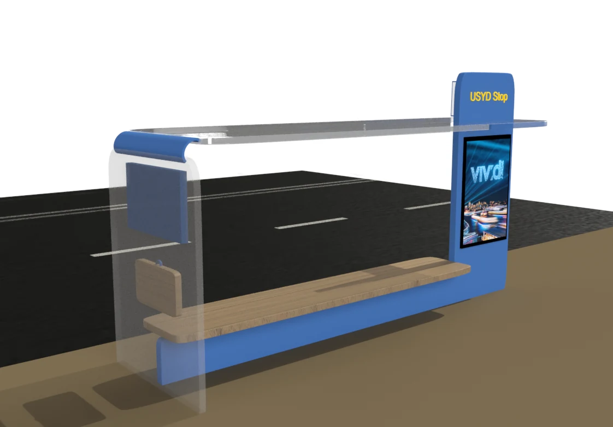
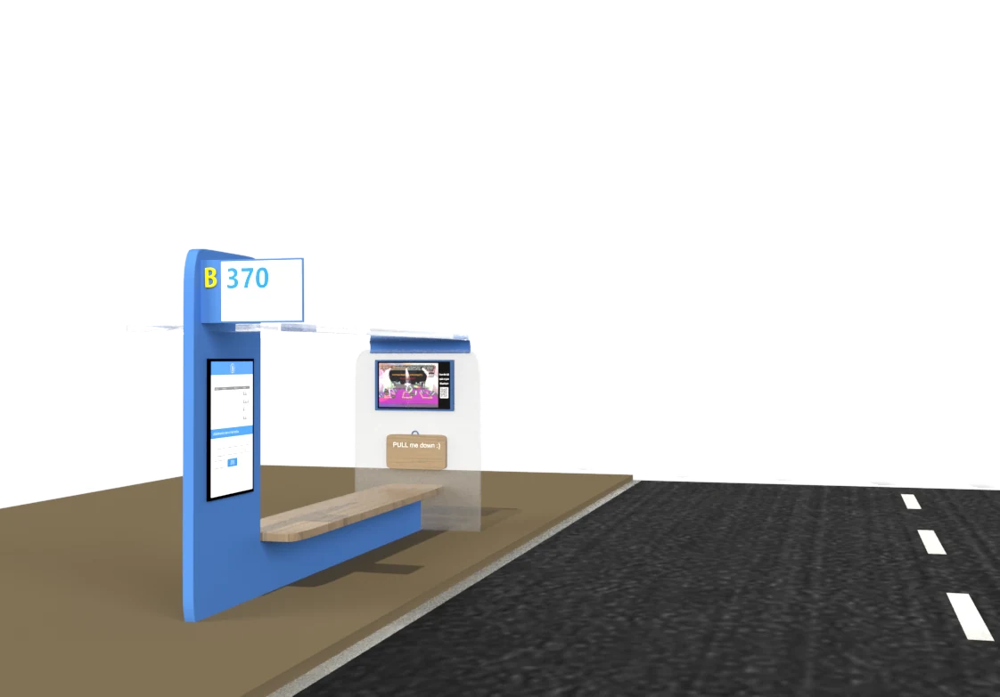

Read the board
Four buses, arrival times and how full they are. The board updates as they move.
Project 02 · Product & interface design
A Sydney bus stop cannot tell a driver that somebody is waiting. This one can: you press the route you want on the timetable, and the sign shows that number to the bus coming down the road.
Timetable · Signage · Prototype
01 — The short version
You choose your route on the timetable screen. The route sign above the shelter lights up with that number. A driver a hundred metres away sees it and knows this stop is worth stopping at. Nobody waves, nobody runs, and nobody stands up for a bus that was never going to stop.
02 — Why this exists
In 2021–22, buses moved 112 million passengers across New South Wales — 40% of all public transport trips, second only to trains. For most of those journeys the last hundred metres are the anxious part: you cannot tell whether the driver has seen you, and the driver cannot tell whether you want this bus.
“But it’s just so unreliable. There’s no point even looking at the timetable because it’s never there when you rock up and, when it does, it’s always full.”
“When it’s busy, sometimes the driver doesn’t even stop because it’s so full you can’t get on and you have to wait forever for the next one.”
What we wrote on the wall after the interviews: the lack of communication between passengers, drivers and bus stops at most of the Sydney bus stops.
03 — Choosing a direction
The research came down to four things a stop needs to do better: catch the driver’s attention, make the sign easy to find, make the information board worth reading, and give people something to do while they wait.
Each of us ran a Crazy 8s round, then we pooled everything: a swing, a game screen, a timetable, a public social website, short videos, a DIY board. Two rounds of the tutor’s feedback removed the ones that could not survive a footpath — the swing and the game screen were both safety problems, and the social website was somebody else’s product.
What survived was not one idea but a combination — a stop that looks like a bus, tells you exactly when the next four buses arrive, and can tell the driver you are there.
04 — The interface
The timetable is not a list of every route that passes here. It is the next four buses, in order of arrival, with how full each one is. You read it once and you know whether to wait, walk, or take a different route.
Select the bus you want to take to hail the bus.
05 — How it behaves
Four buses, arrival times and how full they are. The board updates as they move.
Choose 370. The button locks on, and the board says what will happen next.
The roadside sign switches from the stop name to B 370, large enough to read from a moving bus.
The driver stops, you get on, and the sign clears itself for the next person.
The sign is the whole idea. Everything before it is a normal bus stop; the sign is the part that turns waiting into a message.
06 — The prototype, on one page
The class brief was a physical prototype, so the stop exists at one-fifth scale: foam board frame, cardboard panels, a phone standing in for the timetable screen, and an Arduino driving the sign. The poster below is the version we submitted — the product, the timetable, the sign and the small parts in one place.
Drag to rotate · Scroll to zoom — this is the model built in Adobe Dimension, exported for the web.
07 — The object
The shelter borrows the silhouette of a bus — a rounded nose, a long window band, a roof that lifts at the far end. From across the road it reads as a vehicle, and that is deliberate: a bus stop has to compete with everything else on a Sydney street.




08 — From mockup to cardboard
Three rounds: a paper sketch, a Dimension model, then a 1:5 build. Each step removed a detail that looked good on screen and could not survive being cut out of foam board with a knife.
Every round started on paper — eight boxes, two minutes each. The version that survived had the timetable on the near pillar rather than the far one, because that is the side you walk up to.
The 3D model is where the proportions got tested: how tall the sign sits, how much of the frame is glass, whether the bench reads as part of the structure or an afterthought.
The physical version lost the curved roof and gained a visible seam where the panels meet. A phone behind acrylic stood in for the display; the sign ran off an Arduino.
The model is where the hard decisions happened: the roof angle, how far the bench should stick out, whether the sign belongs above the timetable or above the shelter. Dimension lets you rotate a corner until it looks right; cardboard tells you whether a person can actually sit under it.
09 — What it doesn't solve
The sign only works if the driver scans it. At 40 km/h on a busy road that is a real assumption, and we never tested it with an actual driver.
Telling the driver you are there does not create a seat. The capacity dots help you decide, but the bus can still arrive full.
A lit sign and a touchscreen on a public footpath need power, a data connection and a housing that survives being leaned on. None of that was in scope.
Built for DECO2014 Design Thinking at the University of Sydney, 2023, with two teammates. The screens, the sign and the shelter are one system; the cardboard version is the only one that ever existed in the same room as a person.